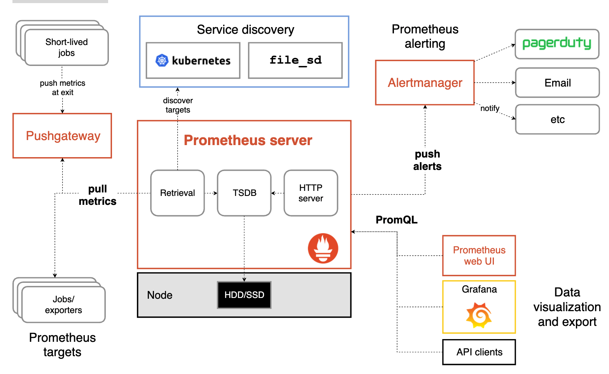

第七节 prometheus：要点总结及面试
1、要点总结
1-1 简介
Prometheus是一款开源的监控和告警工具，用于时序数据的存储和查询。Prometheus适用于统计相关的指标，但不适合记录复杂的细节信息。
1-2 主要特征
- 多维的数据模型；
- 灵活的查询语言；
- 不依赖分布式存储，单个服务器节点是自主的；
- 基于HTTP的数据拉取；
- 通过中间网关推送数据；
- 通过静态配置和服务发现监控目标；
- 多样化的数据界面。
1-3 重要组件
- Prometheus server：最重要的组件，用于抓取及存储数据；
- client libraries：客户端库
- push gateway：中间网关，用来支持短生命周期的服务
- exporters：特定目的的数据源
- alertmanager：用于处理告信息
- 各种支持的工具
1-4 基础架构

主要流程：
- 数据抓取。Prometheus server从监控目标（targets）中拉取数据。targets包括：
short-lived jobs，由于服务时间很短，所以短期服务在服务结束时将数据推送给Pushgateway，Prometheus server从Pushgateway中抓取数据；- exporters：用于第三方的服务给Prometheus；
- Service discovery：consul、DNS等服务发现。
- 数据存储。Prometheus server用于存储抓取到的指标。数据可以存储到本地硬盘或者云端。
- 告警。Prometheus可以通过配置rule实现告警。当满足特定条件时，将alert推送到AlertManager。
- 数据查询和显示。通过PromQL查询，通过Prometheus webUI或grafana等其他工具来可视化显示数据
2、基本概念
2-1 数据模型
Prometheus以时间序列的形式存储数据，以名称和键值对标签为唯一标识，不同标识代表不同的时间序列。
指标名称（metric name）：
指标名称用来指定测量指标的功能。它必须满足[a-zA-Z_:][a-zA-Z0-9_:]*。
标签（label）：
标签的应用保证了Prometheus数据的多维性。对于同一个指标名称，不同标签的组合代表了不同维度的数据。查询语句支持基于标签进行过滤和聚合。标签的增删也代表了时序数据的增删。
标签名要求匹配[a-zA-Z_][a-zA-Z0-9_]*，但是“_”开头的标签预留给内部使用；标签值可以包含任意Unicode字符。
样本（sample）：
样本是时序数据在一个时间点的数值，是时序数据的组成元素。样本包含一个float64的数值，和一个毫秒级的时间戳。
格式：
<metric name>{<label name>=<label value>, ...}
示例：
api_http_requests_total{method="POST", handler="/messages"}
2-2 指标类型：
Prometheus客户端支持4中数据格式。
计数器（counter）：
计数器是一种累加的指标，用来表示只增不减的数据。适用于记录请求次数等指标。
仪表值（gauge）：
仪表值表示数值可以任意增减的指标，适用于记录内存使用率等指标。
直方图（histogram）：
直方图主要用于表示在一段时间范围内对数据进行采样，并对指定区间和总数进行统计。通常用来统计请求时间或者响应大小等数据。
直方图通过指标的basename暴露一系列的时序数据：
- 观察值在观察区间的计数值，显示为
<basename>_bucket{le="<upper inclusive bound>"}的形式； - 观察值的汇总值，显示为
<basename>_sum； - 观察值的计数值，显示为
<basename>_count，等效于<basename>_bucket{le="+Inf"}。
使用histo_quantile()函数可以计算直方图的分位数。
从Prometheus的metrics路径下，可以看到Prometheus中的指标，直方图示例：
# HELP prometheus_http_response_size_bytes Histogram of response size for HTTP requests.
# TYPE prometheus_http_response_size_bytes histogram
prometheus_http_response_size_bytes_bucket{handler="/",le="100"} 1
prometheus_http_response_size_bytes_bucket{handler="/",le="1000"} 1
prometheus_http_response_size_bytes_bucket{handler="/",le="10000"} 1
prometheus_http_response_size_bytes_bucket{handler="/",le="100000"} 1
prometheus_http_response_size_bytes_bucket{handler="/",le="1e+06"} 1
prometheus_http_response_size_bytes_bucket{handler="/",le="1e+07"} 1
prometheus_http_response_size_bytes_bucket{handler="/",le="1e+08"} 1
prometheus_http_response_size_bytes_bucket{handler="/",le="1e+09"} 1
prometheus_http_response_size_bytes_bucket{handler="/",le="+Inf"} 1
prometheus_http_response_size_bytes_sum{handler="/"} 29
prometheus_http_response_size_bytes_count{handler="/"} 1
概要（summary）：
概要和直方图类似，也是一种总结性的观察样本，例如请求时间和响应大小。它除了提供观察值的总的计数值和汇总值，还可以计算分位数。
概要也通过指标的basename暴露一系列的时序数据：
- 观察值的中位数，显示为
<basename>{quantile="<φ>"}，(0 ≤ φ ≤ 1)； - 观察值的汇总值，显示为
<basename>_sum； - 观察值的计数值，显示为
<basename>_count。
示例：
# HELP go_gc_duration_seconds A summary of the GC invocation durations.
# TYPE go_gc_duration_seconds summary
go_gc_duration_seconds{quantile="0"} 2.9743e-05
go_gc_duration_seconds{quantile="0.25"} 6.9639e-05
go_gc_duration_seconds{quantile="0.5"} 0.000105693
go_gc_duration_seconds{quantile="0.75"} 0.000173332
go_gc_duration_seconds{quantile="1"} 0.02720063
go_gc_duration_seconds_sum 0.083278187
go_gc_duration_seconds_count 346
2-3 Job和Instance
一个单独的抓取目标是一个Instance，一组相同类型的Instance组成一个job。例如：
job: api-server
- instance 1: 1.2.3.4:5670
- instance 2: 1.2.3.4:5671
- instance 3: 5.6.7.8:5670
- instance 4: 5.6.7.8:5671
Prometheus抓取指标的时候，会自动生成一些标签，包括job和instance。
job：配置文件中该抓取目标归属的job。instance：<host>:<port>形式的抓取目标的url。
对于每个抓取目标，Prometheus会自动生成一些时序数据：
up{job="<job-name>", instance="<instance-id>"}：判断实例是否可用，可用为1，不可用为0；scrape_duration_seconds{job="<job-name>", instance="<instance-id>"}：从该数据集抓取数据的时间开销。scrape_samples_post_metric_relabeling{job="<job-name>", instance="<instance-id>"}：表示采用重定义标签操作后仍然剩余的样本数。scrape_samples_scraped{job="<job-name>", instance="<instance-id>"}：从该数据源抓取到的样本数量。
3、配置
Prometheus有两种配置方式：通过命令行参数配置，以及通过配置文件配置。
命令行参数主要用于配置系统参数（例如：存储位置，保留在磁盘和内存中的数据量大小等），可以通过./prometheus -h命令查看全部命令行参数。
配置文件则用来定义抓取目标相关的一系列信息，并制定加载的rule文件，默认为prometheus.yml文件。
在--web.enable-lifecycle开启的情况下，可以通过给Prometheus server发送SIGHUP或者向/-/reload路径发送一条HTTP post请求，让运行中的Prometheus加载配置文件，以及配置的rule文件。
如下主要描述配置文件中的配置。
3-1 全局配置
global标签下的配置，会作用到所有的抓取目标。有4种配置
scrape_interval：拉取 targets的默认时间间隔。scrape_timeout：拉取一个 target 的超时时间。evaluation_interval：评估rules的时间间隔。external_labels：和外部系统交流时，添加到数据中的标签。
格式和默认值：
global:
# How frequently to scrape targets by default.
[ scrape_interval: <duration> | default = 1m ]
# How long until a scrape request times out.
[ scrape_timeout: <duration> | default = 10s ]
# How frequently to evaluate rules.
[ evaluation_interval: <duration> | default = 1m ]
# The labels to add to any time series or alerts when communicating with
# external systems (federation, remote storage, Alertmanager).
external_labels:
[ <labelname>: <labelvalue> ... ]
示例：
global:
scrape_interval: 15s
scrape_timeout: 10s
evaluation_interval: 15s
3-2 规则文件配置
rule_files标签下的配置，它指定了一系列的rules 文件。
格式：
# Rule files specifies a list of globs. Rules and alerts are read from
# all matching files.
rule_files:
[ - <filepath_glob> ... ]
示例：
rule_files:
- "rules/simple.rules"
- "rules/rules/*.rules"
3-3 抓取配置
scrape_configs节点下的配置。主要用来配置拉取的数据。
格式：
# A list of scrape configurations.
scrape_configs:
[ - <scrape_config> ... ]
scrape_config：
scrape_config中包含如下标签：
job_name：任务名称honor_labels： 用于解决拉取的数据中标签和服务端侧标签（Prometheus自动生成的job和instance）有冲突的情况。当设置为 true, 以拉取数据中的标签为准，忽略服务器端配置的标签；设置为false则标签以服务配置为准，并将抓取数据中的标签重命名为exported_<original-label>，例如exported_instance。当然，全局配置中的external_labels不受此标签的影响，external_labels只在时序数据没有external_labels中配置的标签的情况下，才会生效。honor_labels的默认值为false。- params：数据拉取访问时带的请求参数
scrape_interval： 拉取时间间隔scrape_timeout: 拉取超时时间metrics_path： 拉取节点的 metric 路径scheme： 拉取数据访问协议sample_limit： 被抓取数据的标签个数限制。如果指标的标签在relabel之后超过限制（大于或等于限制值），该数据将被忽略，不入存储；默认值为0，表示没有限制relabel_configs： 拉取数据重置标签配置metric_relabel_configs：metric重置标签配置
示例：
scrape_configs:
- job_name: node
metrics_path: /metrics
scheme: http
static_configs:
- targets:
- 10.1.204.109:9100
labels:
instance: service1
- targets:
- 10.1.205.235:9100
labels:
instance: private
- job_name: consul-knowledge
metrics_path: /actuator/prometheus
scheme: http
consul_sd_configs:
- server: 10.1.204.79:8500
tag_separator: ','
scheme: http
allow_stale: true
refresh_interval: 30s
services:
- knowledge-service
- gateway-service
完整的scrape_configs的配置参考官网：scrape_config
3-4 告警配置
alerting节点下的配置，用来指定Alertmanager相关的配置。
格式和包含的标签：
# Alerting specifies settings related to the Alertmanager.
alerting:
alert_relabel_configs:
[ - <relabel_config> ... ]
alertmanagers:
[ - <alertmanager_config> ... ]
3-5 远程读写配置
remote_write节点主要用于可写远程存储配置，主要包含以下参数：
- url: 访问地址
remote_timeout: 请求超时时间write_relabel_configs: 标签重置配置, 拉取到的数据，经过重置处理后，发送给远程存储
remote_read节点主要用于可读远程存储配置，主要包含以下参数：
- url: 访问地址
remote_timeout: 请求超时时间
详细的标签信息参考官网：https://prometheus.io/docs/prometheus/latest/configuration/configuration/#remote_write
4、告警模块
告警模块分为两部分。Prometheus Server中的告警规则用来给Alertmanager发送告警；Alertmanager负责管理告警，包括告警的沉默、抑制、汇聚以及通过邮件、PagerDuty或HipChat等方式来发送告警。
创建告警及提示的主要流程：
- 创建并配置Alertmanager；
- 建立Prometheus和Alertmanager的联系；
- 在Prometheus创建告警规则。
4-1 Alertmanager
Alertmanager用于接受和处理客户端发来的告警消息，例如Prometheus server发送的告警。它主要负责告警消息的去重、分组、路由，以及沉默和消除告警。Alertmanager在Prometheus的配置文件中进行配置。
分组Grouping：
分组功能是把具有相似行政的告警归类到一个通知中。这个功能在发生停电、断网之类的事故，导致很多系统同时故障、出现大量告警的情况下，作用非常显著。这种情况下用户可以对告警按集群或者告警名字分组，避免这种情况下收到大量重复的告警消息。
警报分组，分组通知的时间，和通知的接受者是在配置文件中由一个路由树配置的。
抑制Inhibition：
抑制功能用来在一些特定告警已经产生的情况下，抑制另外一些特定告警的通知。例如一个通知集群不可用的告警触发的时候，其他的关于这个告警中的服务或者机器不可用的告警就可以被抑制。
沉默Silences：
沉默用来设置在给定时间内忽略告警。沉默功能是在matchers中进行配置的，和路有树相似。接受到的告警会被检查是否和活跃的slience相等或者相匹配，如果是的话这些告警不会发送通知。
5、查询
5-1 数据类型
- 瞬时向量：例如
http_request_total - 范围向量：例如：
http_request_total[5m]。时间单位：[s,m,h,d,w,y] - 标量：例如：函数up的值
- 字符串：暂未启用
5-2 操作符
二元操作符：
- 算术二元运算符：
+, -, *, /, %, ^ - 比较二元操作符：
==, !=, >, <, >=, <= - 逻辑/集合二元操作符：
and, or, unless
聚合操作符：
- sum ，max ，min ，avg，stddev (求标准差)，stdvar (求方差)，
- count ，
count_values(统计相同数据值的元素数量)，bottomk (样本值第k个最小值)， - topk (样本值第k个最大值)，quantile (统计分位数)
二元运算符的优先级：
二元运算符优先级从高到低：
- ^
- *, /, %
- +, -
- ==, !=, <=, <, >=, >
- and, unless
- or
5-3 函数
参数过多，详情参考官方文档：Prometheus-Functions
示例：
increase(v range-vector)：v是参数值，range-vector是参数类型，例如：increase(http_request_total{job=”prometheus”}[1m])year(v=vector(time()) instant-vector)：vector(time())表示默认值，有默认值的函数可以不传参数
6、prometheus之面试题
6-1 全局配置
global标签下的配置，会作用到所有的抓取目标。有4种配置
scrape_interval：拉取 targets的默认时间间隔。scrape_timeout：拉取一个 target 的超时时间。evaluation_interval：评估rules的时间间隔。external_labels：和外部系统交流时，添加到数据中的标签。
global:
scrape_interval: 15s
scrape_timeout: 10s
evaluation_interval: 15s
6-2 规则文件配置
rule_files 标签下的配置，它指定了一系列的rules 文件。
rule_files:
- "rules/simple.rules"
- "rules/rules/*.rules"
6-3 抓取配置
scrape_configs节点下的配置。主要用来配置拉取的数据。、
scrape_configs:
- job_name: node
metrics_path: /metrics
scheme: http
static_configs:
- targets:
- 10.1.204.109:9100
labels:
instance: service1
- targets:
- 10.1.205.235:9100
labels:
instance: private
- job_name: consul-knowledge
metrics_path: /actuator/prometheus
scheme: http
consul_sd_configs:
- server: 10.1.204.79:8500
tag_separator: ','
scheme: http
allow_stale: true
refresh_interval: 30s
services:
- knowledge-service
- gateway-service
6-4 告警配置
alerting节点下的配置，用来指定Alertmanager相关的配置。
# Alerting specifies settings related to the Alertmanager.
alerting:
alert_relabel_configs:
[ - <relabel_config> ... ]
alertmanagers:
[ - <alertmanager_config> ... ]
6-5 服务发现配置
prometheus服务发现：
- job_name: kubernetes-nodes
kubernetes_sd_configs:
- role: node
6-6 prometheus热更新：
curl -X POST “http://10.102.74.90:9000/-/reload”